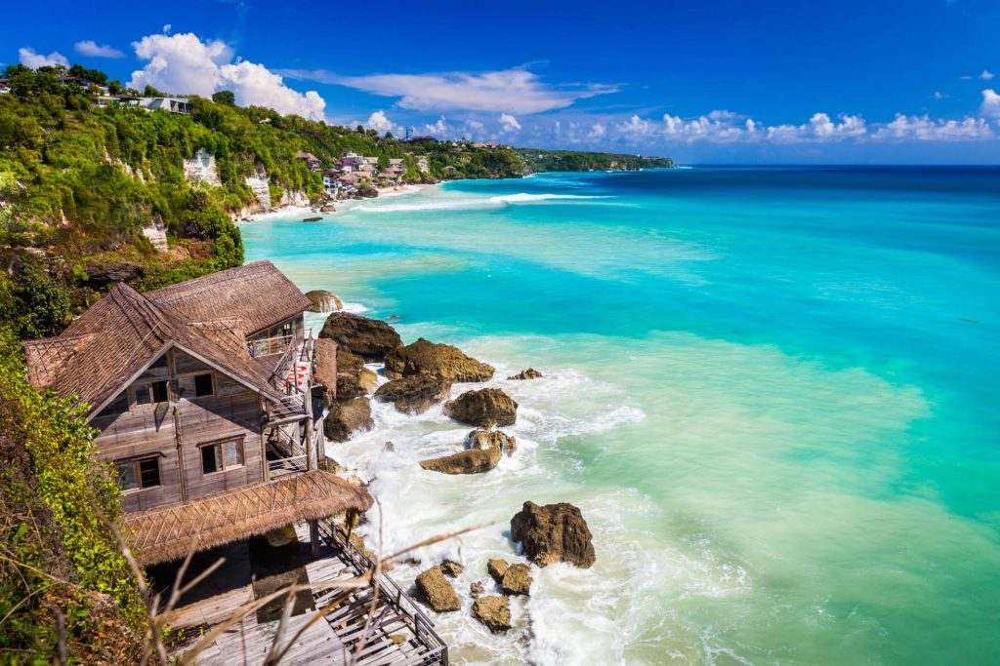
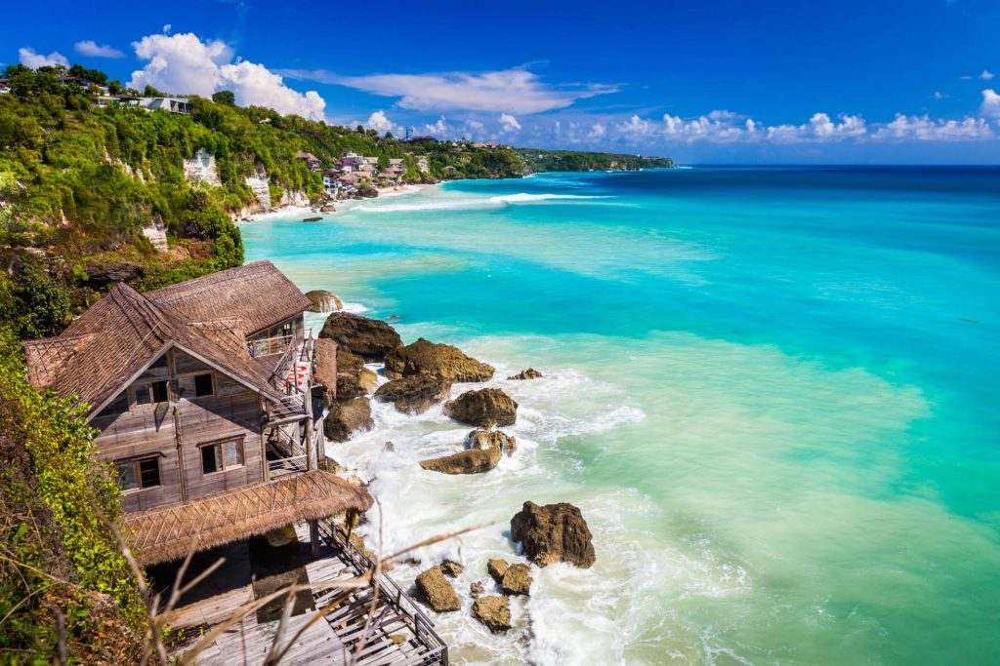

Bali could be a province of land and also the west of the Lesser archipelago. East of Java and west of Lombok, the province includes the island of Bali and many smaller neighbour islands, notably Nusa Penida, Nusa Lembongan, and Nusa Ceningan. The urban center, Denpasar, is that the most thickly settled town within the Lesser archipelago and also the second-largest, when Makassar, in japanese land. The upland city of Ubud in larger Denpasar is taken into account Bali's cultural centre.
Bali was inhabited around 2000 BCE by Austronesian those that migrated originally from the island of Taiwan to a geographical region and Oceanic through Maritime geographical region. Culturally and lingual, the Balinese square measure closely associated with the folks of the Indonesian earth, Malaysia, the Philippines and Oceanic. Stone tools a qualitative analysis from now is found close to the village of Cekik within the island's west.